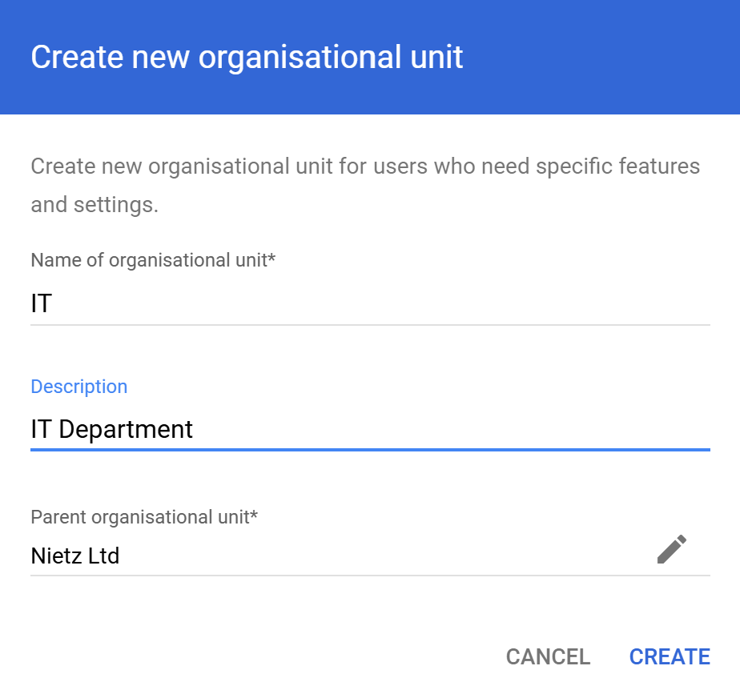
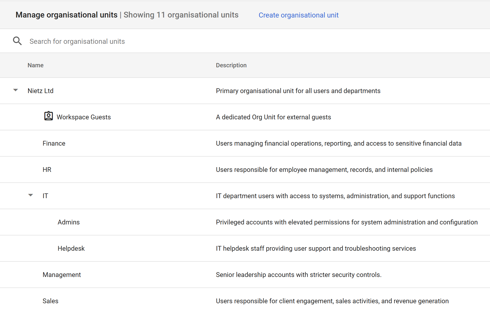

Google Workspace 02: Organisational Units
OU structure for policy inheritance and departmental administration.
02. Organisational Units
Designed and implemented a Google Workspace organisational-unit structure for departmental administration and policy inheritance.
The OU structure supports organised user management, policy enforcement and hierarchical control through inheritance.
Initial OU State
The environment initially contained only the root organisational unit.

OU Creation
Organisational Units (OUs) were configured within the Admin console by defining:
Name
Description
Parent OU

This allows administrators to build a hierarchical structure for users and policies.
OU Structure
The following OU hierarchy was implemented:
- Root: Nietz Ltd
- IT
- Admins
- Helpdesk
- HR
- Finance
- Sales
- Management

Design Approach
The structure was designed to:
Separate users by department (HR, Finance, Sales, etc.)
Isolate privileged accounts (IT Admins vs Helpdesk)
Support scalable organisational growth
Enable policy inheritance across OUs
Policy Inheritance
Policies applied at higher-level OUs automatically cascade down to child OUs unless explicitly overridden.
This allows:
Centralised control (e.g. security policies at root level)
Granular overrides (e.g. stricter controls for Admins)
Reduced administrative overhead
Summary
Evidence covered:
Implementation of organisational unit hierarchy
Understanding of policy inheritance
Separation of users by role and department
Scalable design aligned to business structure
These organisational units form the foundation for applying policies across the environment.